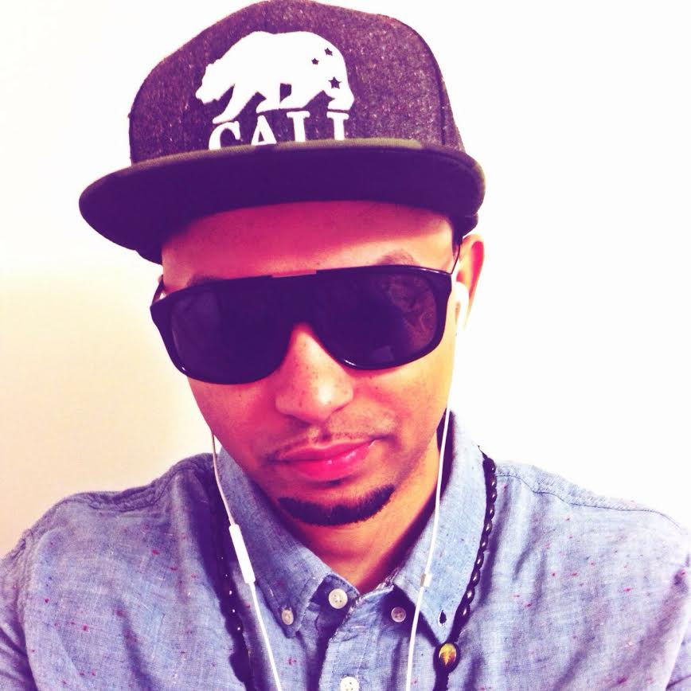

About Us
We need your money now!
The Students
-

Sarah Niemiec
After working in a dirty studio with no ventilation and a boss who cared little for her employees, I was beginning to question what I was doing with my life. One day, while vacuuming up rat poop I realized I had hit a low point and decided it was time to make a change. I thought there must be more to life to than cleaning up after rats for a menial salary, so that’s when I went home and frantically searched for other options. I was complaining to my boyfriend about what to do and he said I really think you would like coding you should give it a try. I found the New York Code and Design Academy online and saw that they had a class coming up in March, “this is the answer I thought!” and immediately applied. The next day I put in my two weeks noticed and said goodbye to the rats for good. Donate now help me make my dream of never having to clean up after rats and becoming a coder come true!
-
Olufunsho Olagundoye
Hey, I am a former track athlete. Currently, I am a licensed insurance broker and student at NYCDA. I play the saxophone on my free time. Please give me money.

Hector Morales
Hector is a guy who believes Big Foot exists. He also believes that education should be FREE! But hat isn't the case. He works hard and isn't too fond of his current job. Which is why he is attending NYCDA. With your help you can help him pay for school and save a student from debt (and maybe help pay for a nice vacation after!)